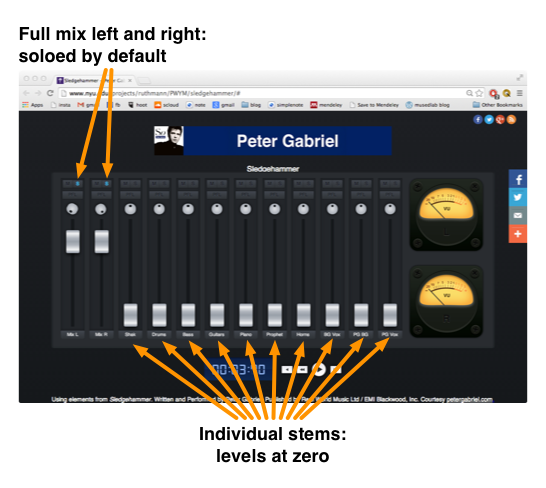
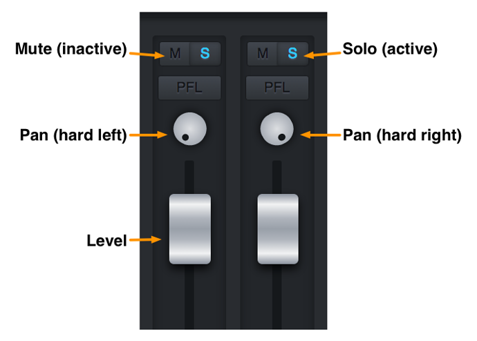
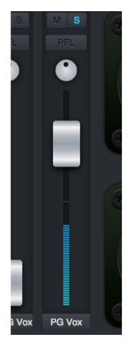
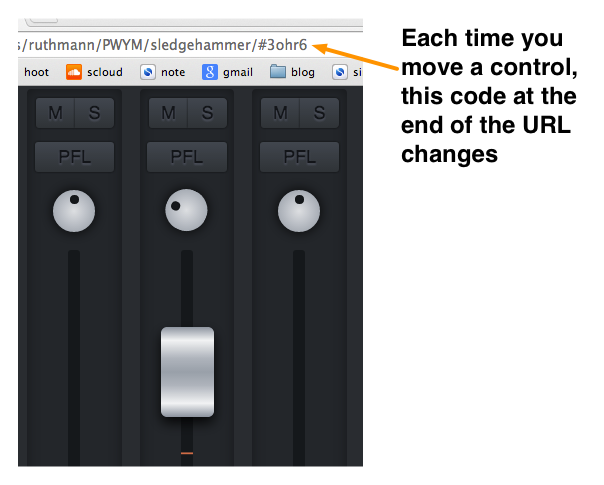
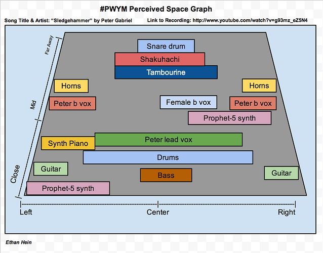

Image omitted from this public edition.
Overview
The fourth module of #PWYM is designed for you to apply the critical listening skills you developed in the beginning of the course to explore multitrack recordings of Peter Gabriel's Sledgehammer and In Your Eyes. After learning some practical strategies for listening deeply to the individual stems, you'll create two static mixes of one of the tunes. The first mix will be a convergent mix, where you listen to a stereo mix and reverse engineer it through adjusting the balance and pan levels of the individual stems. The second mix will be a creative mix of your own choosing. You’ll be asked to share each mix with your group, as well as a description of your process of creating each mix and what you learned along the way. For this module, you'll be working with a custom web-based mixing tool that we developed specifically for this purpose. It works best when run in the Google Chrome browser.
We've divided this module into 4 sections:
- A. Project: Exploring and listening to the multitrack stems from Sledgehammer & In Your Eyes [link withheld]
- B. Video: Paul Geluso: On the creative processes of engineers
- C. Project: Reverse engineer a mix and create a creative mix to share with your crew and the PWYM community
- D. Other People's Good Ideas [link withheld]
Project 1: Explore and Listen to Multitrack Stems
We've invited Ethan Hein to introduce you to the individual stem tracks [link withheld] from Sledgehammer. In these videos Ethan introduces you to the origins of the various sound sources in Sledgehammer and introduces you to our custom remix interface, sharing strategies for approaching the multitracks and reverse engineering a stereo mix using the stems and only adjusting balance and panning.
Step 1 - Learn more about the individual sounds in Sledgehammer
Step 2 - Learn how to listen to the stems from Sledgehammer
Now that you've had a chance to acquaint yourself with the sound sources, open our custom mix interface for Sledgehammer [link withheld] or In Your Eyes [link withheld]. Peter Gabriel has been gracious to give all of us access to the stems for these two songs. Our interface gives you the ability to solo or mute specific tracks, adjust the sonic placement of each track left to right by adjusting the pan knobs, and also adjust the balance of each stem via the sliders.
When you load up the site, you'll notice that the left two tracks are soloed and panned left and right, respectively. This is our reference mix of these tracks, which differs slightly from many of the released versions of Sledgehammer and In Your Eyes. If you are first exploring, we recommend that you first listen to the song all the way through with the default settings to acquaint yourself with the mix. Be sure to listen for the balance of each sound and it's placement left to right in the reference mix.
After listening to the reference mix, mute the first two tracks, restart the song and bring the faders up on each track separately. Try different balance and pan settings, and different combinations of sounds. See if you discover new things in the sounds of each stem that you did not hear before. Some things we like to do include:
- Solo the bass track and guitar tracks.
- Solo the percussion and drum tracks.
- Take a listen to only the vocal tracks.
- Follow your curiosity and try other combinations.
Most of all, take time to explore the stems trying different combinations and the tracks soloed. What do you in each individual track that you could not hear in the composite mix? What surprises you? Can you "reverse engineer" how particular tracks might have been recorded or the specific effects that might be present or not present? Take detailed notes and share them with your Crew and the broader PWYM community.
How to Use Our Mix Interface
This is a quick guide to using the PWYM custom mix interface. We've developed this to walk you through Sledgehammer, but you can apply it to In Your Eyes, as well.
[external link withheld] [link withheld]
When you first pull up the mixer, here's what you see:

The two channels on the left are the complete original mixdown of "Sledgehammer," soloed and panned hard left and right respectively. The rest of the channels contain the individual stems, all with their levels set to zero. From left to right, the stems are:
- Shak: the sampled shakuhachi (bamboo flute) that plays at the top of
the song. - Drums: the drum kit and tambourine.
- Bass: the fretless electric bass guitar.
- Guitars: the two electric guitars.
- Piano: the digital synth piano sound.
- Prophet: the Prophet-5 analog synth that sounds like an organ.
- Horns: the trumpet, trombone and tenor sax.
- BG Vox: the female backing vocalists.
- PG BG Vox: Peter's overdubbed backing vocals.
- PG Vox: Peter's lead vocal.
Each channel has a mute, solo, pan and level control.

To begin exploring the multitrack, un-solo the mixdown channels on the left and start bringing up different stems, alone or in combination. You can discover some interesting things just by listening to the stems in isolation. For example, try soloing Peter's lead vocal:

Whenever Peter is singing, you can hear the rest of the instruments faintly in the background. This is a phenomenon called bleed, and it happens when undesired sound leaks into a mic. The best way to prevent bleed is to record instruments and singers in acoustic isolation. However, Peter added his vocals after the rest of the tracks were complete, so why is there bleed in his mic?
Usually singers use headphones to prevent bleed. However, some singers don't like headphones; they find them unnatural, and prefer to hear their voice out in the room. Peter recorded his vocals while monitoring from speakers, and naturally, some of the sound from the speakers made it into his mic. The Beatles were also famous for always monitoring from speakers.
If you solo the guitar, you'll notice that there is no bleed whatsoever. Even if the guitarists were playing live with the rest of the band, their sound is perfectly isolated. Either their amps were in separate rooms totally sealed off from the rest of the studio, or the guitars were just plugged straight into the soundboard. If the signal never passes through the air, there's no difficulty in keeping it isolated.
Once you've finished your mix, how do you share it with the world? The answer is in the little code at the end of the web page address.

Each time you move a control, you'll notice the code changing automatically. When you're happy with your mix, all you have to do is copy the web page address and paste it into a forum post, an email or wherever you'd like. Then anyone can click the link, and the mix interface will load with your settings all dialed in. Pretty cool. Happy mixing!
Further ideas
As you now know through your work in the first three Modules for PWYM, listening to a song while viewing a visual analysis can often help you hear more details about a particular song and recording. You know that you learn even more when you are the one who creates the analysis to a favorite song. To help you hear more within *Sledgehammer, we've provided a link to our Perceived Space [link withheld] and Musical Structure Graphs [link withheld] for Sledgehammer and encourage you to view them while working on this project as a point of reference.

Note: These interfaces work best in Google Chrome [link withheld], but will also work in Firefox and Safari. They will not work in Internet Explorer. They are also not optimized to work on mobile devices such as iPads and tablets. Please be patient as the audio files load; you are downloading multiple large audio files. After the initial load period, the interface will reload more quickly.
Exploring these ideas through other music
In PWYM 1.0, Bradford Swanson [link withheld] introduced these concepts through the music of Clara Berry and Wooldog [link withheld], a singer/songwriter duo out of Kennebunk, Maine. If you'd like to approach this through that music, see the following video:
You can load a multitrack remix interface for Air Traffic [link withheld] here.
Can't Load our Remix Interface?
Our license with Peter Gabriel prohibits us from making the multitrack stems available for direct download. However, an alternative project is to download the multitrack samples from Peter Gabriel's Shock the Monkey [link withheld] that Peter released as part of a remix contest for SoundCloud [link withheld] and load them into a DAW of your choosing. There are also other multitracks available for remixing which you can find online [link withheld]. Create a mix of one of those songs that you like and share it with your crew.